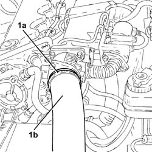
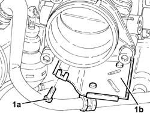
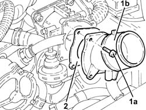
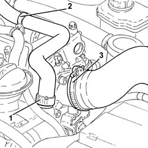
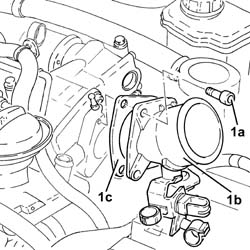
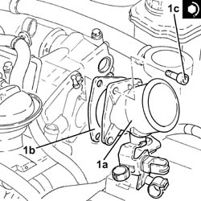

1060G58 CONNECTOR for air inlet hose on throttle casing - R.R.
- Path
- Procedures > 10 ENGINE > 1060 DIESEL FUEL INJECTION > 1060G pressure pump electric control > 1060G58 CONNECTOR for air inlet hose on throttle casing - R.R.
- Kind
- repair procedure (removal / refitting; the operation number is the code)
- Applies to
- engines: 1.9 JTD 8v , 1.9 JTD 16v, 2.4 JTD 10v; all production periods
- Interactive page
- https://sloeber94.github.io/elrnDB-a156/en/#/3237820
Applies to: engines: 1.9 JTD 8v ; all production periods; only with equipment: Euro 3
 Removing
Removing
 Refitting
RefittingProceed with the removal 1016A10 sound-proofing cover - r + r .
1. Loosen band (1a) and disconnect the air delivery sleeve from heat exchanger to intake manifold (1b), throttle body connector side.

Applies to: engines: 1.9 JTD 8v ; all production periods; only with equipment: Euro 3
1. Undo the bolt (1a) and release the vacuum pipe mounting bracket (1b) from the connector on the throttle body.

Applies to: engines: 1.9 JTD 8v ; all production periods; only with equipment: Euro 3
1. Undo bolts (1a) and remove the connector on the throttle body (1b).
2. Remove the gasket.

Applies to: engines: 1.9 JTD 8v ; all production periods; only with equipment: Euro 3
Refitting
RemovingReplace the throttle body, complete with gasket, back in its housing and fix it tightening the bolts to the recommended torque.
 | Fastening | Component | Ø | Value (daNm) |
|---|---|---|---|---|
- | - | - | - | - |
Place the vacuum outlet pipe support bracket back in its housing and secure with the relevant bolt.
Connect the air supply hose from the heat exchanger to the inlet manifold, throttle body connector side, and tighten the band.
Proceed with the refitting 1016A10 sound-proofing cover - r + r .
Applies to: engines: 2.4 JTD 10v; all production periods; only with equipment: Euro 3
Removing
RefittingProceed with the removal 1016A10 sound-proofing cover - r + r .
1. Loosen band (1a) and disconnect the air delivery sleeve from heat exchanger to intake manifold (1b), throttle body connector side.
Applies to: engines: 2.4 JTD 10v; all production periods; only with equipment: Euro 3
1. Undo the bolt (1a) and release the vacuum pipe mounting bracket (1b) from the connector on the throttle body.
Applies to: engines: 2.4 JTD 10v; all production periods; only with equipment: Euro 3
1. Undo bolts (1a) and remove the connector on the throttle body (1b).
2. Remove the gasket.
Applies to: engines: 2.4 JTD 10v; all production periods; only with equipment: Euro 3
Refitting
RemovingReplace the throttle body, complete with gasket, back in its housing and fix it tightening the bolts to the recommended torque.
| Fastening | Component | Ø | Value (daNm) |
|---|---|---|---|---|
- | - | - | - | - |
Place the vacuum outlet pipe support bracket back in its housing and secure with the relevant bolt.
Conect the air supply hose from the heat exchanger to the inlet manifold, throttle body connector side, and tighten the band.
Proceed with the refitting 1016A10 sound-proofing cover - r + r .
Applies to: engines: 1.9 JTD 16v; all production periods
Removing
RefittingProceed with removal 1016A10 sound-proofing cover - r + r .
1. Loosen the band and disconnect the engine oil vapour recovery pipe from the engine oil filler.
2. Release the engine oil vapour recovery pipe from the fastening band and move it aside.
3. Loosen the band and disconnect the air intake hose from the connector on the throttle casing.

Applies to: engines: 1.9 JTD 16v; all production periods
1. Undo the bolts (1a) and remove the connector on the throttle body (1b) complete with gasket (1c).

Applies to: engines: 1.9 JTD 16v; all production periods
Refitting
Removing1. Replace the connector on the throttle body (1a), complete with gasket (1b), back in its housing and secure by tightening bolts (1c) to the recommended torque.
| Fastening | Component | Ø | Value (daNm) |
|---|---|---|---|---|
1c | - | - | - | - |

Applies to: engines: 1.9 JTD 16v; all production periods
Connect the air inlet hose to the connector on the throttle casing and tighten the band.
Place the engine idle oil vapour recovery pipe in its seat and secure it using the band.
Connect the oil vapour recovery pipe to the engine oil filler and tighten the band.
Proceed with refitting 1016A10 sound-proofing cover - r + r .